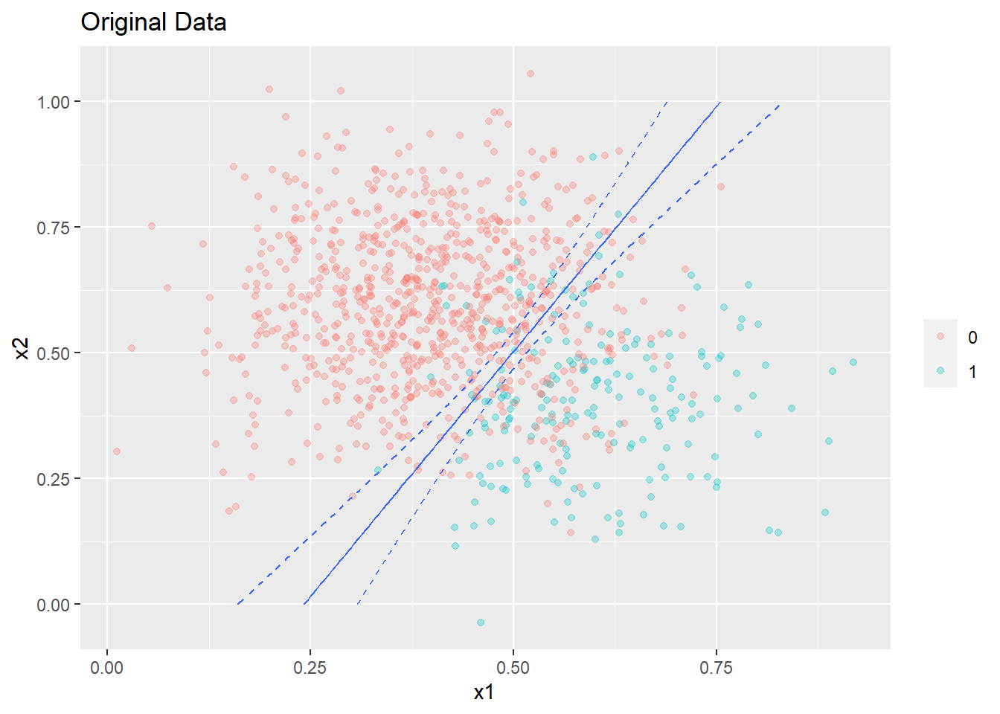
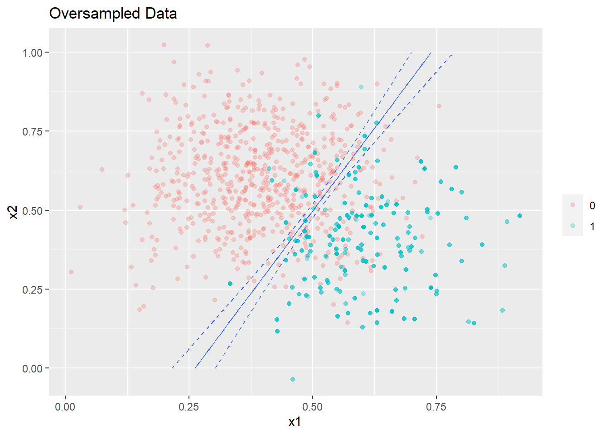
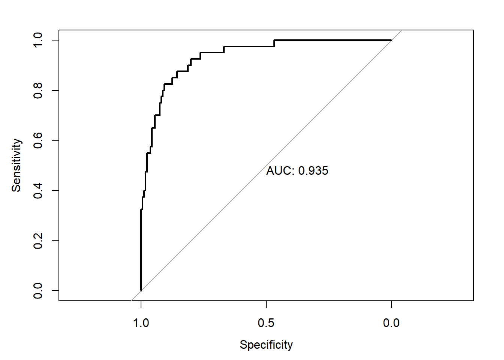
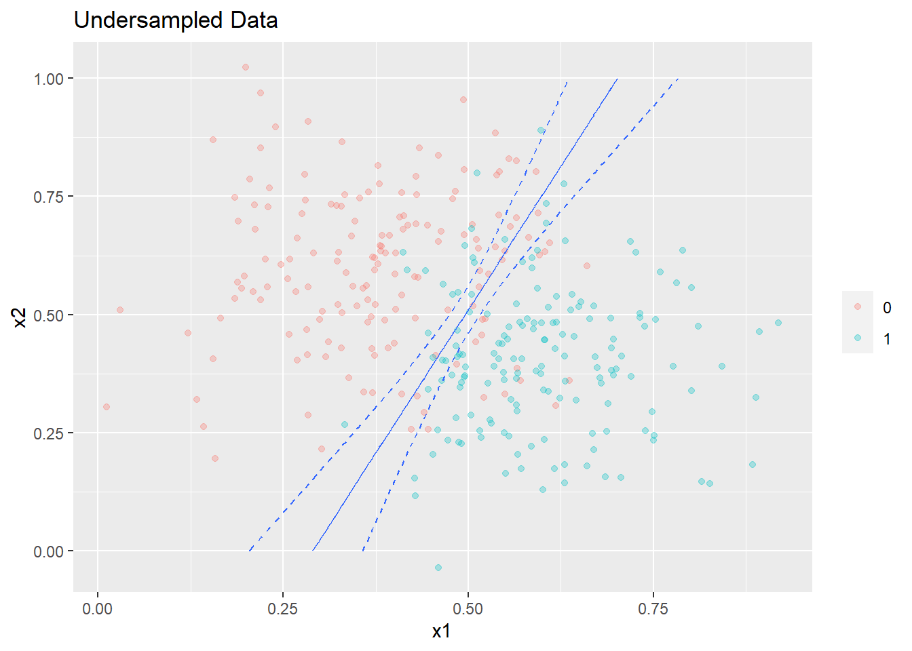
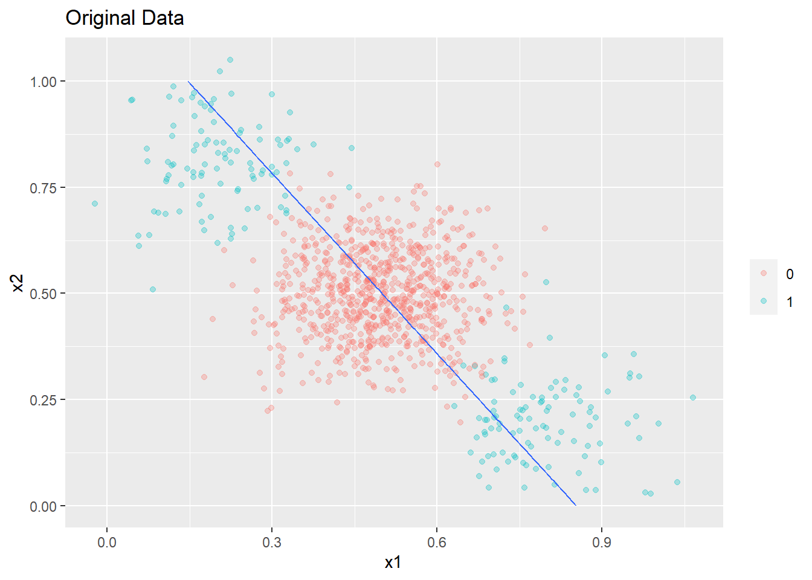
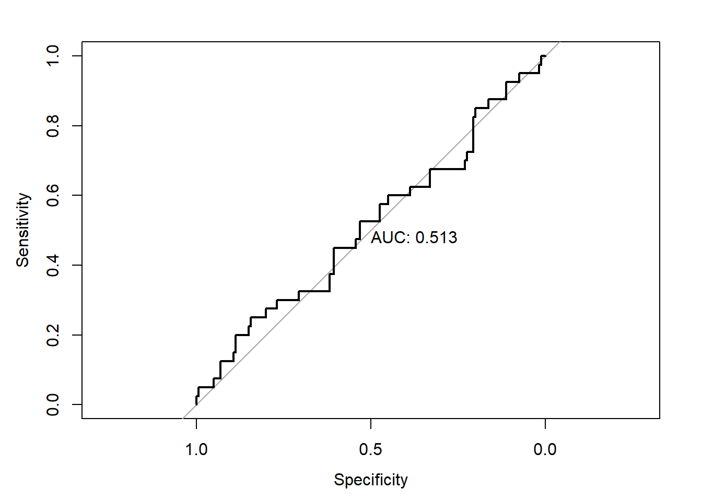
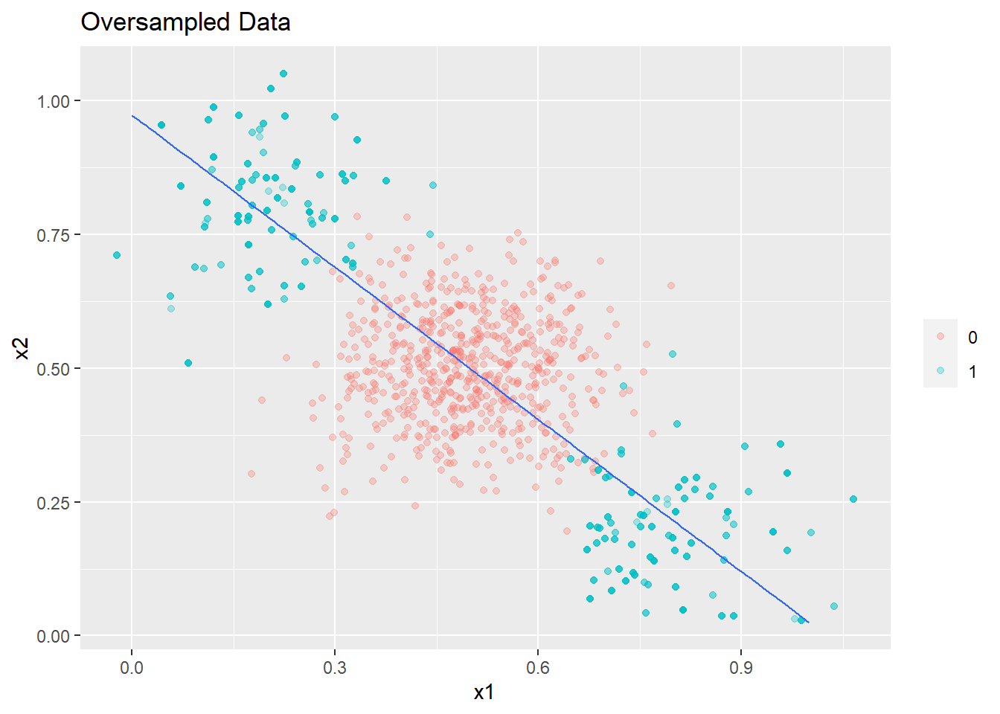
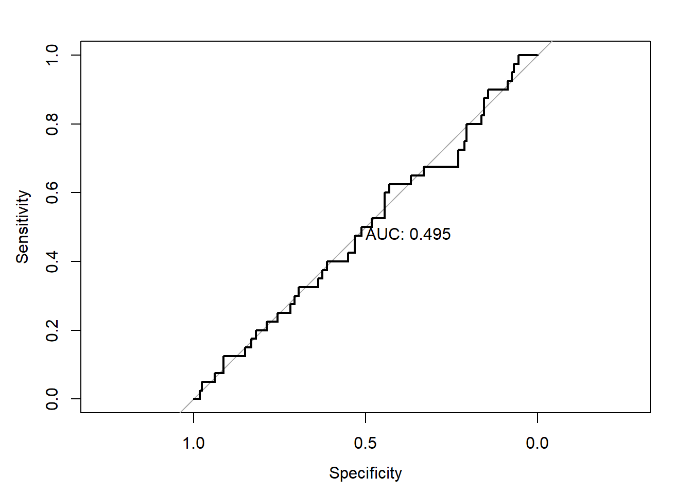
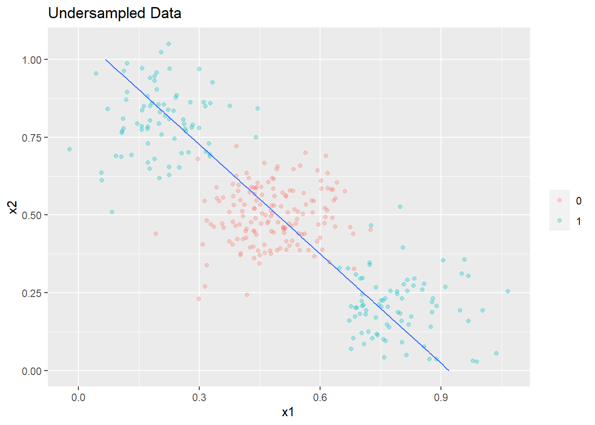
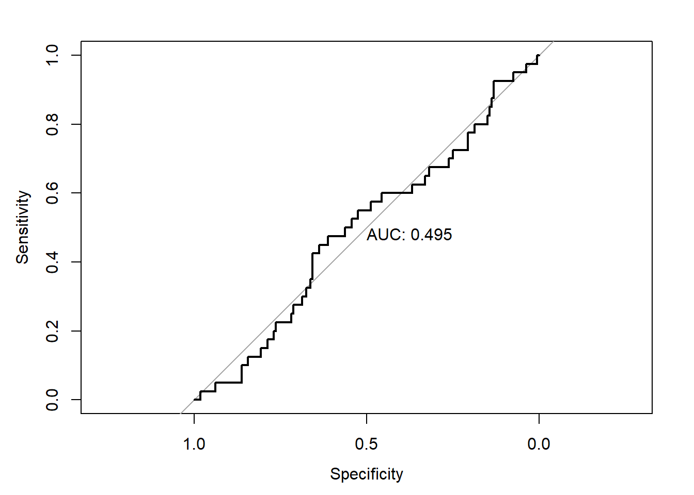

Introduction
This post looks at the impact of rebalancing an imbalanced dataset and seeks to identify some heuristics/rules of thumb to determine when it is appropriate to rebalance an imbalanced dataset through oversampling/undersampling.
Case 1: When your model is a good fit for your data
This is the condition where your model has low bias and is an appropriate fit for the data on hand.
Original Data
Consider the true data you are working with below which is linearly separable. The data is imbalanced with a ratio of 1:4. 20% of the data is held out as a test set.
set.seed(0)
c1 <- cbind('x1'=rnorm(200,0.6,0.12),'x2'=rnorm(200,0.4,0.15))
c2 <- cbind('x1'=rnorm(800,0.4,0.12),'x2'=rnorm(800,0.6,0.15))
original_data <- data.frame(rbind(c1,c2))
original_data$y <- as.factor(c(rep(1,200),rep(0,800)))
#Split to train and test sets
train_index <- sample(c(1:nrow(original_data)),size = 0.8*nrow(original_data),replace=FALSE)
train_data <- original_data[train_index,]
test_data <- original_data[-train_index,]The summary of the datasets are as follows
summary(train_data)## x1 x2 y
## Min. :0.01163 Min. :-0.03573 0:640
## 1st Qu.:0.33082 1st Qu.: 0.44024 1:160
## Median :0.42874 Median : 0.56336
## Mean :0.43496 Mean : 0.56103
## 3rd Qu.:0.53504 3rd Qu.: 0.68092
## Max. :0.91904 Max. : 1.02417summary(test_data)## x1 x2 y
## Min. :0.05498 Min. :0.1563 0:160
## 1st Qu.:0.34173 1st Qu.:0.4410 1: 40
## Median :0.44668 Median :0.5453
## Mean :0.43971 Mean :0.5510
## 3rd Qu.:0.52208 3rd Qu.:0.6525
## Max. :0.79505 Max. :1.0559A simple logistic regression model is built on the training data.
glm1 <- glm(y ~ ., data = train_data, family = 'binomial')
summary(glm1)##
## Call:
## glm(formula = y ~ ., family = "binomial", data = train_data)
##
## Deviance Residuals:
## Min 1Q Median 3Q Max
## -2.31817 -0.36147 -0.15567 -0.04157 2.72629
##
## Coefficients:
## Estimate Std. Error z value Pr(>|z|)
## (Intercept) -5.0134 0.7983 -6.280 3.39e-10 ***
## x1 15.0057 1.4026 10.698 < 2e-16 ***
## x2 -7.6975 0.9103 -8.456 < 2e-16 ***
## ---
## Signif. codes: 0 '***' 0.001 '**' 0.01 '*' 0.05 '.' 0.1 ' ' 1
##
## (Dispersion parameter for binomial family taken to be 1)
##
## Null deviance: 800.64 on 799 degrees of freedom
## Residual deviance: 394.73 on 797 degrees of freedom
## AIC: 400.73
##
## Number of Fisher Scoring iterations: 6Below is a function to generate a plot of the decision boundaries and the confidence intervals.
library(ggplot2)
plot_decision_boundary <- function(model,boundary,data,title,min_=0,max_=1){
grid_dimension <- seq(min_,max_,by =0.01)
grid <- expand.grid(x1=grid_dimension,x2 = grid_dimension)
grid_preds <- predict(model,newdata=grid,type='response')
preds_ci <- predict(model,newdata=grid,type='link',se.fit=TRUE)
#Calculate 95% prediction interval bounds
critval <- 1.96 ## approx 95% CI
upr <- preds_ci$fit + (critval * preds_ci$se.fit)
lwr <- preds_ci$fit - (critval * preds_ci$se.fit)
#These are logits, use inverse link function to get probabilties
upr2 <- model$family$linkinv(upr)
lwr2 <- model$family$linkinv(lwr)
contour_data <- cbind(grid,lwr = lwr2,upr =upr2,pred = grid_preds)
p <- ggplot(data,aes(x=x1,y=x2))+geom_point(aes(colour = factor(y)),alpha =0.3)+labs(title=title) + theme (legend.title = element_blank())
p+ stat_contour(data = contour_data,aes(x = x1,y = x2,z=pred),breaks=c(boundary))+
stat_contour(data = contour_data,aes(x = x1,y = x2,z=lwr),breaks=c(boundary),linetype=2)+
stat_contour(data = contour_data,aes(x = x1,y = x2,z=upr),breaks=c(boundary),linetype=2)
}The plot of the decision boundary and 95% confidence intervals from the model are shown below.The decision boundary is a contour corresponding to a probability of 0.2 given this is the proportion of the target class in the dataset.
plot_decision_boundary(glm1,boundary=0.2,data=original_data,title= 'Original Data',min_=0,max_=1)
The overall performance of the model on the test dataset is shown below.
library(pROC)
test_pred_probs1 <- predict(glm1,newdata = test_data,type='response')
roc1 <- roc(test_data$y,test_pred_probs1)
plot(roc1,print.auc=TRUE)Oversampled Data
Now we oversample the minority class so that both classes are balanced.
library(ROSE)
train_data_1 <- sum(train_data$y==0)
oversampled_data <- ovun.sample(y~.,data=train_data,method='over',N = 2*train_data_1)$data
summary(oversampled_data)## x1 x2 y
## Min. :0.01163 Min. :-0.03573 0:640
## 1st Qu.:0.38328 1st Qu.: 0.38133 1:640
## Median :0.50435 Median : 0.50109
## Mean :0.49718 Mean : 0.50539
## 3rd Qu.:0.60212 3rd Qu.: 0.63095
## Max. :0.91904 Max. : 1.02417A second model is fitted on the oversampled data. Given we have more data, the standard error of the parameter estimates have reduced.
glm2 <- glm(y ~ ., data = oversampled_data, family = 'binomial')
summary(glm2)##
## Call:
## glm(formula = y ~ ., family = "binomial", data = oversampled_data)
##
## Deviance Residuals:
## Min 1Q Median 3Q Max
## -2.99430 -0.35839 0.00092 0.45946 2.30790
##
## Coefficients:
## Estimate Std. Error z value Pr(>|z|)
## (Intercept) -4.4832 0.5698 -7.867 3.62e-15 ***
## x1 17.1126 1.0804 15.839 < 2e-16 ***
## x2 -8.1692 0.6549 -12.474 < 2e-16 ***
## ---
## Signif. codes: 0 '***' 0.001 '**' 0.01 '*' 0.05 '.' 0.1 ' ' 1
##
## (Dispersion parameter for binomial family taken to be 1)
##
## Null deviance: 1774.46 on 1279 degrees of freedom
## Residual deviance: 781.99 on 1277 degrees of freedom
## AIC: 787.99
##
## Number of Fisher Scoring iterations: 6The decision boundary corresponding to a contour of probability = 0.5 (given the data is balanced) is shown below with a 95% confidence limits .
plot_decision_boundary(glm2,boundary=0.5,data=oversampled_data,title= 'Oversampled Data',min_=0,max_=1)
As expected the width of confidence intervals of the regression line shrink since we are now using more data.
The overall performance of the new model on the test dataset is shown below.
library(pROC)
test_pred_probs2 <- predict(glm2,newdata = test_data,type='response')
roc2 <- roc(test_data$y,test_pred_probs2)
plot(roc2,print.auc=TRUE)
As seen above, the performance of the model built on the oversampled data is only marginally better than on the imbalanced data.The difference is not statistically significant
roc.test(roc1,roc2)##
## DeLong's test for two correlated ROC curves
##
## data: roc1 and roc2
## Z = 0.9998, p-value = 0.3174
## alternative hypothesis: true difference in AUC is not equal to 0
## sample estimates:
## AUC of roc1 AUC of roc2
## 0.9362500 0.9348437Undersampled data
Now we try undersampling the majority class. Given this amounts to throwing away useful information,this is typically done only when the data is really big and the tools/infrastructure being used does not support large data sets.
train_data_0 <- sum(train_data$y==1)
undersampled_data <- ovun.sample(y~.,data=train_data,method='under',N = 2*train_data_0)$data
summary(undersampled_data)## x1 x2 y
## Min. :0.01163 Min. :-0.03573 0:160
## 1st Qu.:0.37429 1st Qu.: 0.36955 1:160
## Median :0.50291 Median : 0.49148
## Mean :0.48858 Mean : 0.50101
## 3rd Qu.:0.59854 3rd Qu.: 0.63293
## Max. :0.91904 Max. : 1.02417A third model is fitted on the undersampled data. Given undersampling reduces the amount of data we are using, the standard error of the parameter estimates increase.
glm3 <- glm(y ~ ., data = undersampled_data, family = 'binomial')
summary(glm3)##
## Call:
## glm(formula = y ~ ., family = "binomial", data = undersampled_data)
##
## Deviance Residuals:
## Min 1Q Median 3Q Max
## -2.74148 -0.31754 -0.00045 0.42250 2.28722
##
## Coefficients:
## Estimate Std. Error z value Pr(>|z|)
## (Intercept) -5.352 1.177 -4.546 5.46e-06 ***
## x1 18.465 2.362 7.818 5.35e-15 ***
## x2 -7.597 1.220 -6.227 4.76e-10 ***
## ---
## Signif. codes: 0 '***' 0.001 '**' 0.01 '*' 0.05 '.' 0.1 ' ' 1
##
## (Dispersion parameter for binomial family taken to be 1)
##
## Null deviance: 443.61 on 319 degrees of freedom
## Residual deviance: 186.63 on 317 degrees of freedom
## AIC: 192.63
##
## Number of Fisher Scoring iterations: 6The plot is shown below with a 95% confidence limits. The confidence interval around the decision boundary has also expanded.
plot_decision_boundary(glm3,boundary=0.5,data=undersampled_data,title= 'Undersampled Data',min_=0,max_=1)
The performance of this new model on the test dataset is shown below.
library(pROC)
test_pred_probs3 <- predict(glm3,newdata = test_data,type='response')
roc3 <- roc(test_data$y,test_pred_probs3)
plot(roc3,print.auc=TRUE)
As seen above, the performance of the model built on the undersampled data is again only marginally better than on the imbalanced data.The difference in performance is again not statistically significant
roc.test(roc1,roc3)##
## DeLong's test for two correlated ROC curves
##
## data: roc1 and roc3
## Z = 1.4806, p-value = 0.1387
## alternative hypothesis: true difference in AUC is not equal to 0
## sample estimates:
## AUC of roc1 AUC of roc2
## 0.9362500 0.9321875Case 2: When your model is not a good fit for your data
Now consider the case when the model is not a good fit for the data.This refers to the scenario when you chooses a model with high bias.
Original Data
The data is again partitioned into train and test sets as earlier.
set.seed(0)
#class 1
c1 <- cbind('x1'=c(rnorm(100,0.2,0.1),rnorm(100,0.8,0.1)),
'x2'=c(rnorm(100,0.8,0.1),rnorm(100,0.2,0.1)))
#class2
c2 <- cbind('x1'=rnorm(800,0.5,0.1),'x2'=rnorm(800,0.5,0.1))
original_data2 <- data.frame(rbind(c1,c2))
original_data2$y <- as.factor(c(rep(1,200),rep(0,800)))
#Split to train and test sets
train_index <- sample(c(1:nrow(original_data2)),size = 0.8*nrow(original_data2),replace=FALSE)
train_data2 <- original_data2[train_index,]
test_data2 <- original_data2[-train_index,]Summary of the datasets are shown below.
summary(train_data2)## x1 x2 y
## Min. :-0.02239 Min. :0.02793 0:640
## 1st Qu.: 0.40243 1st Qu.:0.40536 1:160
## Median : 0.49068 Median :0.49987
## Mean : 0.49655 Mean :0.49993
## 3rd Qu.: 0.59524 3rd Qu.:0.59498
## Max. : 1.06587 Max. :1.05071summary(test_data2)## x1 x2 y
## Min. :0.0460 Min. :0.04276 0:160
## 1st Qu.:0.4038 1st Qu.:0.40692 1: 40
## Median :0.5000 Median :0.48628
## Mean :0.4968 Mean :0.49700
## 3rd Qu.:0.5847 3rd Qu.:0.59146
## Max. :0.9625 Max. :0.96148A model is fitted on the original data.
glm4 <- glm(y ~ ., data = train_data2, family = 'binomial')
summary(glm4)##
## Call:
## glm(formula = y ~ ., family = "binomial", data = train_data2)
##
## Deviance Residuals:
## Min 1Q Median 3Q Max
## -0.7455 -0.6777 -0.6607 -0.6341 1.9051
##
## Coefficients:
## Estimate Std. Error z value Pr(>|z|)
## (Intercept) -1.9080 0.6226 -3.065 0.00218 **
## x1 0.6119 0.6880 0.889 0.37381
## x2 0.4319 0.6726 0.642 0.52077
## ---
## Signif. codes: 0 '***' 0.001 '**' 0.01 '*' 0.05 '.' 0.1 ' ' 1
##
## (Dispersion parameter for binomial family taken to be 1)
##
## Null deviance: 800.64 on 799 degrees of freedom
## Residual deviance: 799.84 on 797 degrees of freedom
## AIC: 805.84
##
## Number of Fisher Scoring iterations: 4The plot is shown below
plot_decision_boundary(glm4,boundary=0.2,data= original_data2,title= 'Original Data',min_=0,max_=1)
It can be seen above that the model is mis-specified for the data given and the decision boundary learned is biased.
The performance of this new model on the test dataset has predictably deteriorated.
library(pROC)
test_pred_probs4 <- predict(glm4,newdata = test_data2,type='response')
roc4 <- roc(test_data2$y,test_pred_probs4)
plot(roc4,print.auc=TRUE)
Oversampled Data
Now we oversample the minority class.
set.seed(0)
train_data_0 <- sum(train_data2$y==0)
oversampled_data2 <- ovun.sample(y~.,data=train_data2,method='over',N = 2*train_data_0)$data
summary(oversampled_data2)## x1 x2 y
## Min. :-0.02239 Min. :0.02793 0:640
## 1st Qu.: 0.32077 1st Qu.:0.32272 1:640
## Median : 0.48765 Median :0.50195
## Mean : 0.49570 Mean :0.50277
## 3rd Qu.: 0.67683 3rd Qu.:0.66858
## Max. : 1.06587 Max. :1.05071A second model is fitted on the oversampled data. As expected, the standard error of the parameter estimates has decreased given we are now using more data.
glm5 <- glm(y ~ ., data = oversampled_data2, family = 'binomial')
summary(glm5)##
## Call:
## glm(formula = y ~ ., family = "binomial", data = oversampled_data2)
##
## Deviance Residuals:
## Min 1Q Median 3Q Max
## -1.25580 -1.17644 0.01662 1.17775 1.24644
##
## Coefficients:
## Estimate Std. Error z value Pr(>|z|)
## (Intercept) -0.4073 0.3988 -1.021 0.307
## x1 0.3969 0.4244 0.935 0.350
## x2 0.4188 0.4049 1.034 0.301
##
## (Dispersion parameter for binomial family taken to be 1)
##
## Null deviance: 1774.5 on 1279 degrees of freedom
## Residual deviance: 1773.4 on 1277 degrees of freedom
## AIC: 1779.4
##
## Number of Fisher Scoring iterations: 3The plot is shown below. Oversampling does not make any material difference to the decision boundary.
plot_decision_boundary(glm5,boundary=0.5,data= oversampled_data2,title= 'Oversampled Data',min_=0,max_=1)
The performance of this new model is shown below.
library(pROC)
test_pred_probs5 <- predict(glm5,newdata = test_data2,type='response')
roc5 <- roc(test_data2$y,test_pred_probs5)
plot(roc5,print.auc=TRUE)
The performance of the model has actually deteriorated after oversampling.
Undersampled Data
Now we undersample the majority class.
set.seed(0)
train_data_1 <- sum(train_data2$y==1)
undersampled_data2 <- ovun.sample(y~.,data=train_data2,method='under',N = 2*train_data_1)$data
summary(undersampled_data2)## x1 x2 y
## Min. :-0.02239 Min. :0.02793 0:160
## 1st Qu.: 0.32501 1st Qu.:0.34263 1:160
## Median : 0.47918 Median :0.49461
## Mean : 0.49348 Mean :0.49942
## 3rd Qu.: 0.67674 3rd Qu.:0.64952
## Max. : 1.06587 Max. :1.05071A second model is fitted on the undersampled data. Given the amount of data used has shrunk, the standard error of the parameter estimates is higher than in the original data.
glm6 <- glm(y ~ ., data = undersampled_data2, family = 'binomial')
summary(glm6)##
## Call:
## glm(formula = y ~ ., family = "binomial", data = undersampled_data2)
##
## Deviance Residuals:
## Min 1Q Median 3Q Max
## -1.34987 -1.16813 0.01669 1.17236 1.42414
##
## Coefficients:
## Estimate Std. Error z value Pr(>|z|)
## (Intercept) -1.2904 0.8229 -1.568 0.117
## x1 1.4033 0.8691 1.615 0.106
## x2 1.1970 0.8504 1.408 0.159
##
## (Dispersion parameter for binomial family taken to be 1)
##
## Null deviance: 443.61 on 319 degrees of freedom
## Residual deviance: 440.95 on 317 degrees of freedom
## AIC: 446.95
##
## Number of Fisher Scoring iterations: 4The plot is shown below. Undersampling again does not make any material difference to the decision boundary.
plot_decision_boundary(glm6,boundary=0.5,data= undersampled_data2,title= 'Undersampled Data',min_=0,max_=1)
The performance of this new model is shown below.
library(pROC)
test_pred_probs6 <- predict(glm6,newdata = test_data2,type='response')
roc6 <- roc(test_data2$y,test_pred_probs6)
plot(roc6,print.auc=TRUE)
The performance of the model built on undersampled data is also worse than that on the original data.
Conclusion
If a model is correctly specified,rebalancing the data with undersampling/oversampling may marginally improve the performance of the model but the difference in performance is not statistically significant and unlikely to materially impact business outcomes
If the model is incorrectly specified, rebalancing the data does help such a model learn the correct decision boundary and the performance of the resulting model is likely to get worse and almost certainly will not be materially better.
If you have an imbalanced dataset, you should probably try to engineer new features or use a different model with lower bias before trying to rebalance the dataset.
Oversampling the dataset can be an effective strategy if your cost of false negatives is much higher than that of false positives, in this case you care more about your recall than your precision, so you would want to overweight your target class by oversampling them.
Next Steps
I will expand this analysis to include real world datasets. In several blog posts on imbalanced learning, I have seen that baselines without rebalancing are not presented for a fair comparison. In other cases, the thresholds for the model built on imbalanced data are chosen as 0.5 by default instead of carefully selecting the threshold to maximize an appropriate performance metric. This often results in the performance of some of these rebalancing techniques being exaggerated.
In a subsequent blog post or an extension to this one,I will also evaluate some of the commonly used synthetic data generation techniques and try to identify some heuristics around when they might add value.